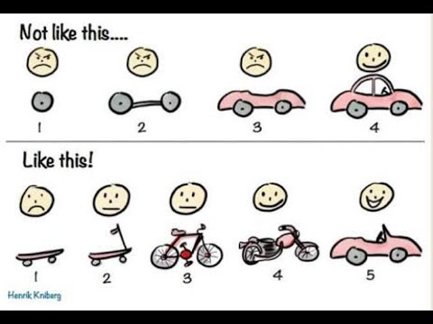

By the end of this module, we will:
- Understand what workflow automation is and how it helps
reproducibility.
- Review several different ways to execute repetitive tasks on Great
Lakes.
- Introduce the idea of job/task geometries to visualize approachs and
their advantages and limitations.
Workflow automation helps reproducibility
Data-intensive research entails transforming raw data into more
meaningful/valuable results. Often, this involves a series of step-wise
transformation tasks. To make this research reproducible by someone
else, all the transformations must either be documented so that a human
can reproduce them, or automated so a computer can. A reproducible
solution has a blend of documentation and automation.
Data-intensive research often involves repeating transformation tasks
many times. Also overtime transformations evolve to be more complex,
more computationally demanding, or take longer. A
workflow describes the key transformation tasks and
their relationships to the inputs and outputs.
Workflow automation describes the tools and
techniques to systematically assemble these tasks into a executable,
repeatable, robust solution. Building an automated workflow appears
harder than documenting it to be run manually, but there are many
benefits to reproducibility:
- Automation facilitates repetition.
- Automation can simplify manual documentation.
- Automation simplifies validation of your workflow.
- Automation streamlines sharing.
- Automation scales to larger inputs
There are many ways to build an automated workflow. In this module we
will consider several ways of executing pleasingly parallel tasks on Great Lakes:
- A serial task loop
- Parallelizing tasks using driver scripts and sbatch files.
- The SLURM Job Launcher
All these approaches execute the same workflow in different ways. The
workflow produces word pangrams. A word pangram is like
an anagram that allows repeating letters, e.g. the sequence of letters
ACEHMNT can be rearranged to create the pangrams ATTACHMENT, CATCHMENT,
ENCHANTMENT, and ENHANCEMENT.
The workflow accepts a text file containing list of letter sequences
separated by lines; for each letter sequence it produces a file
containing one or more pangrams.
TODO workflow image
Pangram: A serial task loop
# Orient on project pangram
cd /nfs/turbo/umms-bioinf-wkshp/workshop/home/$USER
cd project_pangrams
ls -1
pangram_job_launcher
pangram_parallel_sbatch
pangram_serial_loop
README.md
cd pangram_serial_loop
ls -1
find_pangrams.sbat
find_pangrams.sh
letters.txt
pangram.sh
README.md
Let’s consider a few of these files in turn, starting with the
README.
|
README.md
|
# pangram_serial_loop
- Produces pangrams for inputs in letters.txt.
Makes one file for each line in letters.
- cgates 6/1/2024
- Usage:
./find_pangrams.sh #to run locally
or
sbatch find_pangrams.sbat # to submit to worker node
Files:
- find_pangrams.sbat: SLURM batch file; calls find_pangrams.sh
- find_pangrams.sh: Loops throught input and calls pangram.sh
- letters.txt: list of letter sequences seperated by newlines.
- pangram.sh: accepts a single letter sequence and prints all pangrams.
|
The pangram.sh script is the workhorse of this workflow. You are
welcome to look at the implementation, but for our purposes we can treat
it as a black box. We’ll run it once to see it in action.
./pangram.sh lovely
lovely
lovey
volley
Consider the input to the workflow:
|
letters.txt
|
Ndefglu
Hacilno
Tdghnou
Nailmpt
Pbegikn
Yacilrt
Achnopy
Uginoqt
Eachkmn
Alhyidn
|
And finally, the script we will launch to execute the workflow:
|
find_pangrams.sh
|
#/bin/bash
set -eu
for letters in $(cat letters.txt); do
echo pangrams for: $letters >> /dev/stderr
./pangram.sh $letters > results.${letters}.txt
done
echo done >> /dev/stderr
|
Having reviewed the inputs and scripts, we can launch the workflow
like as shown below. (This project is called “serial loop” because in
this workflow we are looping over the inputs and processing one at a
time.)
./find_pangrams.sh
pangrams for: Ndefglu
pangrams for: Hacilno
pangrams for: Tdghnou
pangrams for: Nailmpt
pangrams for: Pbegikn
pangrams for: Yacilrt
pangrams for: Achnopy
pangrams for: Uginoqt
pangrams for: Eachkmn
pangrams for: Alhyidn
We see the results files have been added:
ls
find_pangrams.sbat results.Achnopy.txt results.Ndefglu.txt
find_pangrams.sh results.Alhyidn.txt results.Pbegikn.txt
letters.txt results.Eachkmn.txt results.Tdghnou.txt
pangram.sh results.Hacilno.txt results.Uginoqt.txt
README.md results.Nailmpt.txt results.Yacilrt.txt
cat results.Achnopy.txt
cacophony
Question: Which letter combination generated the most
pangrams?
Let’s run it again but instead of using the login-node, we’ll submit
this to a worker node using the provided sbat script:
# first clear out the old results
rm results.*
sbatch find_pangrams.sbat
Submitted batch job 1234567
Use squeue -u $USER to see when the job is finished and
then review the outputs. We now see the results files and also the slurm
log file:
find_pangrams.sbat results.Alhyidn.txt results.Tdghnou.txt
find_pangrams.sh results.Eachkmn.txt results.Uginoqt.txt
letters.txt results.Hacilno.txt results.Yacilrt.txt
pangram.sh results.Nailmpt.txt slurm-1234567.out
README.md results.Ndefglu.txt
results.Achnopy.txt results.Pbegikn.txt
This approach is correct, clear, and reproducible; however it’s not
ideal. Consider how the tasks are contained within a job:
|
Job/task geometry of the serial loop approach
|

TODO geometry_serial_loop
|
|
Each sbatch request is a job script; a job script may be composed of
multiple tasks. Key attributes of a job script are - what sub-tasks will
I run? - how many resources do I need? - how long will I need to
run?
You can represent these graphically by making boxes for each job and
their tasks (height = resource request and length = time). In the case
above, there are many similar tasks contained in a single job. This
diagram is a rough representation of the job/task
geometry. This is a useful way of visualizing and comparing
approaches; also, the job geometry is critically useful information to
the scheduler which is trying to pack everyone’s jobs into the available
clusters as neatly/efficiently as possible.
|
Considering that each of these pangram tasks are completely
independent of each other (i.e. pleasingly parallel). We might be able
to make better use of our ~16000 CPUs by parallelizing the workflow.
Pangram: Parallel tasks
Pangram: Job Launcher
Reviewing job/task geometries
Pro tips
Do not try to automate something that you cannot do by
hand.
Make it right. Make it clear. Make it efficient. (In that
order.)
Build a README for each workflow. Consider
including:
- Your name/email
- The date
- How to install the workflow
- How to run the workflow
- Any necessary context/constraints that would help your future
collaborator reproduce your results.
Automate the workflow with the data you have.
Don’t generalize a workflow too soon. You might see that a workflow
could be parameterized/extended to apply to new types of data. Feel that
excitement, note the opportunity in the README, and trust that you will
make that change when you need to.
Instead of developing the whole workflow end to end,
consider an iterative and incremental approach.

From Henrik Kniberg
Break workflow development into at least three
steps:
- do one sample and verify correctness of outputs. (For a large
dataset consider subsetting/downsampling your inputs so you can iterate
quicker.)
- scale to a few samples and check those outputs; tune resource
allocations
- run the whole batch
TODO Exercise 1
Key ideas
- Achieving reproducible research requires a blend of documentation
and automation.
- Be kind to your future self; they will thank you for the README you
left them.
- Automation helps reproducibility:
- Automation shrinks your README.
- Automation simplifies validation of your workflow.
- Automation enables repetition.
- Automation streamlines sharing.
- Automation scales to larger inputs
- Job/task geometries help visualize how different approaches are
executed. (It also hints at the n-dimensional game of Tetris the
job-scheduler is playing to pack everyones jobs as neatly as
possible.
- The SLURM job launcher allows you to gather many
parallel tasks into a main job, in effect creating a transient
sub-cluster within the main HPC.
- For a more complex transformation, a driver script can be either
simple or resource efficient - choose one. Consider more robust
solutions (e.g. Snakemake) as necessary.
Links and references
UM ITS docs on job launcher
UM ARC miVideo on advanced SLURM techniques (including job
launcher, job arrays, and more)
For more examples of pangrams in action, checkout:
LS0tCnRpdGxlOiAiSW50cm8gdG8gd29ya2Zsb3cgYXV0b21hdGlvbiIKYXV0aG9yOiAiVU0gQmlvaW5mb3JtYXRpY3MgQ29yZSIKb3V0cHV0OgogICAgICAgIGh0bWxfZG9jdW1lbnQ6CiAgICAgICAgICAgIGluY2x1ZGVzOgogICAgICAgICAgICAgICAgaW5faGVhZGVyOiBoZWFkZXIuaHRtbAogICAgICAgICAgICB0aGVtZTogcGFwZXIKICAgICAgICAgICAgdG9jOiB0cnVlCiAgICAgICAgICAgIHRvY19kZXB0aDogNAogICAgICAgICAgICB0b2NfZmxvYXQ6IHRydWUKICAgICAgICAgICAgbnVtYmVyX3NlY3Rpb25zOiBmYWxzZQogICAgICAgICAgICBmaWdfY2FwdGlvbjogdHJ1ZQogICAgICAgICAgICBtYXJrZG93bjogR0ZNCiAgICAgICAgICAgIGNvZGVfZG93bmxvYWQ6IHRydWUKLS0tCjxzdHlsZSB0eXBlPSJ0ZXh0L2NzcyI+CmJvZHl7IC8qIE5vcm1hbCAgKi8KICAgICAgZm9udC1zaXplOiAxNHB0OwogIH0KcHJlIHsKICBmb250LXNpemU6IDEycHQKfQp0YWJsZS5maWcsIHRoLmZpZywgdGQuZmlnIHsKICBib3JkZXI6IDFweCBzb2xpZCBibGFjazsKICBib3JkZXItY29sbGFwc2U6IGNvbGxhcHNlOwogIHBhZGRpbmc6IDE1cHg7Cn0KPC9zdHlsZT4KCkJ5IHRoZSBlbmQgb2YgdGhpcyBtb2R1bGUsIHdlIHdpbGw6CgotIFVuZGVyc3RhbmQgd2hhdCB3b3JrZmxvdyBhdXRvbWF0aW9uIGlzIGFuZCBob3cgaXQgaGVscHMgcmVwcm9kdWNpYmlsaXR5LgotIFJldmlldyBzZXZlcmFsIGRpZmZlcmVudCB3YXlzIHRvIGV4ZWN1dGUgcmVwZXRpdGl2ZSB0YXNrcyBvbiBHcmVhdCBMYWtlcy4KLSBJbnRyb2R1Y2UgdGhlIGlkZWEgb2Ygam9iL3Rhc2sgZ2VvbWV0cmllcyB0byB2aXN1YWxpemUgYXBwcm9hY2hzIGFuZCB0aGVpciBhZHZhbnRhZ2VzIGFuZCBsaW1pdGF0aW9ucy4KCgojIyBXb3JrZmxvdyBhdXRvbWF0aW9uIGhlbHBzIHJlcHJvZHVjaWJpbGl0eQoKRGF0YS1pbnRlbnNpdmUgcmVzZWFyY2ggZW50YWlscyB0cmFuc2Zvcm1pbmcgcmF3IGRhdGEgaW50byBtb3JlCm1lYW5pbmdmdWwvdmFsdWFibGUgcmVzdWx0cy4gT2Z0ZW4sIHRoaXMgaW52b2x2ZXMgYSBzZXJpZXMgb2Ygc3RlcC13aXNlCnRyYW5zZm9ybWF0aW9uIHRhc2tzLiBUbyBtYWtlIHRoaXMgcmVzZWFyY2ggcmVwcm9kdWNpYmxlIGJ5IHNvbWVvbmUgZWxzZSwgYWxsIHRoZSAKdHJhbnNmb3JtYXRpb25zIG11c3QgZWl0aGVyIGJlIGRvY3VtZW50ZWQgc28gdGhhdCBhIGh1bWFuIGNhbiByZXByb2R1Y2UgdGhlbSwgb3IKYXV0b21hdGVkIHNvIGEgY29tcHV0ZXIgY2FuLiBBIHJlcHJvZHVjaWJsZSBzb2x1dGlvbiBoYXMgYSBibGVuZCBvZiAKZG9jdW1lbnRhdGlvbiBhbmQgYXV0b21hdGlvbi4KCkRhdGEtaW50ZW5zaXZlIHJlc2VhcmNoIG9mdGVuIGludm9sdmVzIHJlcGVhdGluZyB0cmFuc2Zvcm1hdGlvbiB0YXNrcyBtYW55CnRpbWVzLiBBbHNvIG92ZXJ0aW1lIHRyYW5zZm9ybWF0aW9ucyBldm9sdmUgdG8gYmUgbW9yZSBjb21wbGV4LCBtb3JlCmNvbXB1dGF0aW9uYWxseSBkZW1hbmRpbmcsIG9yIHRha2UgbG9uZ2VyLiBBICoqd29ya2Zsb3cqKiBkZXNjcmliZXMgdGhlIGtleQp0cmFuc2Zvcm1hdGlvbiB0YXNrcyBhbmQgdGhlaXIgcmVsYXRpb25zaGlwcyB0byB0aGUgaW5wdXRzIGFuZCBvdXRwdXRzLgoKKipXb3JrZmxvdyBhdXRvbWF0aW9uKiogZGVzY3JpYmVzIHRoZSB0b29scyBhbmQgdGVjaG5pcXVlcyB0byBzeXN0ZW1hdGljYWxseQphc3NlbWJsZSB0aGVzZSB0YXNrcyBpbnRvIGEgZXhlY3V0YWJsZSwgcmVwZWF0YWJsZSwgcm9idXN0IHNvbHV0aW9uLiBCdWlsZGluZyBhbgphdXRvbWF0ZWQgd29ya2Zsb3cgYXBwZWFycyBoYXJkZXIgdGhhbiBkb2N1bWVudGluZyBpdCB0byBiZSBydW4gbWFudWFsbHksIGJ1dAp0aGVyZSBhcmUgbWFueSBiZW5lZml0cyB0byByZXByb2R1Y2liaWxpdHk6CgogIC0gQXV0b21hdGlvbiBmYWNpbGl0YXRlcyByZXBldGl0aW9uLgogIC0gQXV0b21hdGlvbiBjYW4gc2ltcGxpZnkgbWFudWFsIGRvY3VtZW50YXRpb24uCiAgLSBBdXRvbWF0aW9uIHNpbXBsaWZpZXMgdmFsaWRhdGlvbiBvZiB5b3VyIHdvcmtmbG93LgogIC0gQXV0b21hdGlvbiBzdHJlYW1saW5lcyBzaGFyaW5nLgogIC0gQXV0b21hdGlvbiBzY2FsZXMgdG8gbGFyZ2VyIGlucHV0cwoKVGhlcmUgYXJlIG1hbnkgd2F5cyB0byBidWlsZCBhbiBhdXRvbWF0ZWQgd29ya2Zsb3cuIEluIHRoaXMgbW9kdWxlIHdlIHdpbGwKY29uc2lkZXIgc2V2ZXJhbCB3YXlzIG9mIGV4ZWN1dGluZyBbcGxlYXNpbmdseQpwYXJhbGxlbF0oaHR0cHM6Ly9lbi53aWtpcGVkaWEub3JnL3dpa2kvRW1iYXJyYXNzaW5nbHlfcGFyYWxsZWwpe3RhcmdldD0iX2JsYW5rIn0KdGFza3Mgb24gR3JlYXQgTGFrZXM6CgotIEEgc2VyaWFsIHRhc2sgbG9vcAotIFBhcmFsbGVsaXppbmcgdGFza3MgdXNpbmcgZHJpdmVyIHNjcmlwdHMgYW5kIHNiYXRjaCBmaWxlcy4KLSBUaGUgU0xVUk0gSm9iIExhdW5jaGVyCgpBbGwgdGhlc2UgYXBwcm9hY2hlcyBleGVjdXRlIHRoZSBzYW1lIHdvcmtmbG93IGluIGRpZmZlcmVudCB3YXlzLiBUaGUgd29ya2Zsb3cKcHJvZHVjZXMgd29yZCBwYW5ncmFtcy4gQSAqKndvcmQgcGFuZ3JhbSoqIGlzIGxpa2UgYW4gYW5hZ3JhbSB0aGF0IGFsbG93cwpyZXBlYXRpbmcgbGV0dGVycywgZS5nLiB0aGUgc2VxdWVuY2Ugb2YgbGV0dGVycyBBQ0VITU5UIGNhbiBiZSByZWFycmFuZ2VkIHRvCmNyZWF0ZSB0aGUgcGFuZ3JhbXMgQVRUQUNITUVOVCwgQ0FUQ0hNRU5ULCBFTkNIQU5UTUVOVCwgYW5kIEVOSEFOQ0VNRU5ULgoKVGhlIHdvcmtmbG93IGFjY2VwdHMgYSB0ZXh0IGZpbGUgY29udGFpbmluZyBsaXN0IG9mIGxldHRlciBzZXF1ZW5jZXMgc2VwYXJhdGVkCmJ5IGxpbmVzOyBmb3IgZWFjaCBsZXR0ZXIgc2VxdWVuY2UgaXQgcHJvZHVjZXMgYSBmaWxlIGNvbnRhaW5pbmcgb25lIG9yIG1vcmUgCnBhbmdyYW1zLgoKW1RPRE8gd29ya2Zsb3cgaW1hZ2VdKE1vZHVsZTA2X3BhbmdyYW1fd29ya2Zsb3cucG5nKQoKIyMgUGFuZ3JhbTogQSBzZXJpYWwgdGFzayBsb29wCgoKYGBgYmFzaAojIE9yaWVudCBvbiBwcm9qZWN0IHBhbmdyYW0KY2QgL25mcy90dXJiby91bW1zLWJpb2luZi13a3NocC93b3Jrc2hvcC9ob21lLyRVU0VSCmNkIHByb2plY3RfcGFuZ3JhbXMKbHMgLTEKYGBgCgo+IGBgYApwYW5ncmFtX2pvYl9sYXVuY2hlcgpwYW5ncmFtX3BhcmFsbGVsX3NiYXRjaApwYW5ncmFtX3NlcmlhbF9sb29wClJFQURNRS5tZAogICAgYGBgCgpgYGByCmNkIHBhbmdyYW1fc2VyaWFsX2xvb3AKbHMgLTEKYGBgCgo+IGBgYApmaW5kX3BhbmdyYW1zLnNiYXQKZmluZF9wYW5ncmFtcy5zaApsZXR0ZXJzLnR4dApwYW5ncmFtLnNoClJFQURNRS5tZAogIGBgYAoKTGV0J3MgY29uc2lkZXIgYSBmZXcgb2YgdGhlc2UgZmlsZXMgaW4gdHVybiwgc3RhcnRpbmcgd2l0aCB0aGUgUkVBRE1FLgoKPHRhYmxlIGNsYXNzPSdmaWcnPjx0cj48dGggY2xhc3M9J2ZpZyc+UkVBRE1FLm1kPC90aD48L3RyPgo8dHI+PHRkIGNsYXNzPSdmaWcnPjxwcmU+CiMgcGFuZ3JhbV9zZXJpYWxfbG9vcAoKLSBQcm9kdWNlcyBwYW5ncmFtcyBmb3IgaW5wdXRzIGluIGxldHRlcnMudHh0LiAKICBNYWtlcyBvbmUgZmlsZSBmb3IgZWFjaCBsaW5lIGluIGxldHRlcnMuCi0gY2dhdGVzIDYvMS8yMDI0Ci0gVXNhZ2U6IAogIC4vZmluZF9wYW5ncmFtcy5zaCAjdG8gcnVuIGxvY2FsbHkKICBvcgogIHNiYXRjaCBmaW5kX3BhbmdyYW1zLnNiYXQgIyB0byBzdWJtaXQgdG8gd29ya2VyIG5vZGUKCkZpbGVzOgotIGZpbmRfcGFuZ3JhbXMuc2JhdDogU0xVUk0gYmF0Y2ggZmlsZTsgY2FsbHMgZmluZF9wYW5ncmFtcy5zaAotIGZpbmRfcGFuZ3JhbXMuc2g6IExvb3BzIHRocm91Z2h0IGlucHV0IGFuZCBjYWxscyBwYW5ncmFtLnNoCi0gbGV0dGVycy50eHQ6IGxpc3Qgb2YgbGV0dGVyIHNlcXVlbmNlcyBzZXBlcmF0ZWQgYnkgbmV3bGluZXMuCi0gcGFuZ3JhbS5zaDogYWNjZXB0cyBhIHNpbmdsZSBsZXR0ZXIgc2VxdWVuY2UgYW5kIHByaW50cyBhbGwgcGFuZ3JhbXMuCjwvcHJlPjwvdGQ+PC90cj48L3RhYmxlPgo8YnIvPgo8YnIvPgoKVGhlIHBhbmdyYW0uc2ggc2NyaXB0IGlzIHRoZSB3b3JraG9yc2Ugb2YgdGhpcyB3b3JrZmxvdy4gWW91IGFyZSB3ZWxjb21lIHRvIGxvb2sKYXQgdGhlIGltcGxlbWVudGF0aW9uLCBidXQgZm9yIG91ciBwdXJwb3NlcyB3ZSBjYW4gdHJlYXQgaXQgYXMgYSBibGFjayBib3guCldlJ2xsIHJ1biBpdCBvbmNlIHRvIHNlZSBpdCBpbiBhY3Rpb24uCgpgYGByCi4vcGFuZ3JhbS5zaCBsb3ZlbHkKYGBgCgo+IGBgYApsb3ZlbHkKbG92ZXkKdm9sbGV5CiAgYGBgCgoKQ29uc2lkZXIgdGhlIGlucHV0IHRvIHRoZSB3b3JrZmxvdzoKCjx0YWJsZSBjbGFzcz0nZmlnJyB3aWR0aD0nMTAwJSc+PHRyPjx0aCBjbGFzcz0nZmlnJz5sZXR0ZXJzLnR4dDwvdGg+PC90cj4KPHRyPjx0ZCBjbGFzcz0nZmlnJz4KYGBgCk5kZWZnbHUKSGFjaWxubwpUZGdobm91Ck5haWxtcHQKUGJlZ2lrbgpZYWNpbHJ0CkFjaG5vcHkKVWdpbm9xdApFYWNoa21uCkFsaHlpZG4KYGBgCjwvdGQ+PC90cj48L3RhYmxlPgo8YnIvPgo8YnIvPgoKQW5kIGZpbmFsbHksIHRoZSBzY3JpcHQgd2Ugd2lsbCBsYXVuY2ggdG8gZXhlY3V0ZSB0aGUgd29ya2Zsb3c6Cgo8dGFibGUgY2xhc3M9J2ZpZycgd2lkdGg9JzEwMCUnPjx0cj48dGggY2xhc3M9J2ZpZyc+ZmluZF9wYW5ncmFtcy5zaDwvdGg+PC90cj4KPHRyPjx0ZCBjbGFzcz0nZmlnJz4KYGBgCiMvYmluL2Jhc2gKc2V0IC1ldQoKZm9yIGxldHRlcnMgaW4gJChjYXQgbGV0dGVycy50eHQpOyBkbwogICAgZWNobyBwYW5ncmFtcyBmb3I6ICRsZXR0ZXJzID4+IC9kZXYvc3RkZXJyCiAgICAuL3BhbmdyYW0uc2ggJGxldHRlcnMgPiByZXN1bHRzLiR7bGV0dGVyc30udHh0CmRvbmUKZWNobyBkb25lID4+IC9kZXYvc3RkZXJyCmBgYAo8L3RkPjwvdHI+PC90YWJsZT4KPGJyLz4KPGJyLz4KCkhhdmluZyByZXZpZXdlZCB0aGUgaW5wdXRzIGFuZCBzY3JpcHRzLCB3ZSBjYW4gbGF1bmNoIHRoZSB3b3JrZmxvdyBsaWtlIGFzIApzaG93biBiZWxvdy4gKFRoaXMgcHJvamVjdCBpcyBjYWxsZWQgInNlcmlhbCBsb29wIiBiZWNhdXNlIGluIHRoaXMgd29ya2Zsb3cgCndlIGFyZSBsb29waW5nIG92ZXIgdGhlIGlucHV0cyBhbmQgcHJvY2Vzc2luZyBvbmUgYXQgYSB0aW1lLikKCmBgYHIKLi9maW5kX3BhbmdyYW1zLnNoCmBgYAoKPiBgYGAKcGFuZ3JhbXMgZm9yOiBOZGVmZ2x1CnBhbmdyYW1zIGZvcjogSGFjaWxubwpwYW5ncmFtcyBmb3I6IFRkZ2hub3UKcGFuZ3JhbXMgZm9yOiBOYWlsbXB0CnBhbmdyYW1zIGZvcjogUGJlZ2lrbgpwYW5ncmFtcyBmb3I6IFlhY2lscnQKcGFuZ3JhbXMgZm9yOiBBY2hub3B5CnBhbmdyYW1zIGZvcjogVWdpbm9xdApwYW5ncmFtcyBmb3I6IEVhY2hrbW4KcGFuZ3JhbXMgZm9yOiBBbGh5aWRuCiAgYGBgCgpXZSBzZWUgdGhlIHJlc3VsdHMgZmlsZXMgaGF2ZSBiZWVuIGFkZGVkOgoKYGBgcgpscwpgYGAKCj4gYGBgCmZpbmRfcGFuZ3JhbXMuc2JhdCAgcmVzdWx0cy5BY2hub3B5LnR4dCAgcmVzdWx0cy5OZGVmZ2x1LnR4dApmaW5kX3BhbmdyYW1zLnNoICAgIHJlc3VsdHMuQWxoeWlkbi50eHQgIHJlc3VsdHMuUGJlZ2lrbi50eHQKbGV0dGVycy50eHQgICAgICAgICByZXN1bHRzLkVhY2hrbW4udHh0ICByZXN1bHRzLlRkZ2hub3UudHh0CnBhbmdyYW0uc2ggICAgICAgICAgcmVzdWx0cy5IYWNpbG5vLnR4dCAgcmVzdWx0cy5VZ2lub3F0LnR4dApSRUFETUUubWQgICAgICAgICAgIHJlc3VsdHMuTmFpbG1wdC50eHQgIHJlc3VsdHMuWWFjaWxydC50eHQKICBgYGAKICAKYGBgcgpjYXQgcmVzdWx0cy5BY2hub3B5LnR4dApgYGAKPiBgYGAKY2Fjb3Bob255CiAgYGBgCgoqUXVlc3Rpb246IFdoaWNoIGxldHRlciBjb21iaW5hdGlvbiBnZW5lcmF0ZWQgdGhlIG1vc3QgcGFuZ3JhbXM/KgoKTGV0J3MgcnVuIGl0IGFnYWluIGJ1dCBpbnN0ZWFkIG9mIHVzaW5nIHRoZSBsb2dpbi1ub2RlLCB3ZSdsbCBzdWJtaXQgdGhpcyB0byBhCndvcmtlciBub2RlIHVzaW5nIHRoZSBwcm92aWRlZCBzYmF0IHNjcmlwdDoKCmBgYHIKIyBmaXJzdCBjbGVhciBvdXQgdGhlIG9sZCByZXN1bHRzCnJtIHJlc3VsdHMuKgpzYmF0Y2ggZmluZF9wYW5ncmFtcy5zYmF0IApgYGAKCj4gYGBgClN1Ym1pdHRlZCBiYXRjaCBqb2IgMTIzNDU2NwogIGBgYAoKVXNlIGBzcXVldWUgLXUgJFVTRVJgIHRvIHNlZSB3aGVuIHRoZSBqb2IgaXMgZmluaXNoZWQgYW5kIHRoZW4gcmV2aWV3IHRoZSAKb3V0cHV0cy4gV2Ugbm93IHNlZSB0aGUgcmVzdWx0cyBmaWxlcyBhbmQgYWxzbyB0aGUgc2x1cm0gbG9nIGZpbGU6Cgo+IGBgYApmaW5kX3BhbmdyYW1zLnNiYXQgICByZXN1bHRzLkFsaHlpZG4udHh0ICByZXN1bHRzLlRkZ2hub3UudHh0CmZpbmRfcGFuZ3JhbXMuc2ggICAgIHJlc3VsdHMuRWFjaGttbi50eHQgIHJlc3VsdHMuVWdpbm9xdC50eHQKbGV0dGVycy50eHQgICAgICAgICAgcmVzdWx0cy5IYWNpbG5vLnR4dCAgcmVzdWx0cy5ZYWNpbHJ0LnR4dApwYW5ncmFtLnNoICAgICAgICAgICByZXN1bHRzLk5haWxtcHQudHh0ICBzbHVybS0xMjM0NTY3Lm91dApSRUFETUUubWQgICAgICAgICAgICByZXN1bHRzLk5kZWZnbHUudHh0CnJlc3VsdHMuQWNobm9weS50eHQgIHJlc3VsdHMuUGJlZ2lrbi50eHQKYGBgCgpUaGlzIGFwcHJvYWNoIGlzIGNvcnJlY3QsIGNsZWFyLCBhbmQgcmVwcm9kdWNpYmxlOyBob3dldmVyIGl0J3Mgbm90IGlkZWFsLgpDb25zaWRlciBob3cgdGhlIHRhc2tzIGFyZSBjb250YWluZWQgd2l0aGluIGEgam9iOgoKPHRhYmxlIGNsYXNzPSdmaWcnIHdpZHRoPScxMDAlJz48dHI+PHRoIGNsYXNzPSdmaWcnPkpvYi90YXNrIGdlb21ldHJ5IG9mIHRoZSBzZXJpYWwgbG9vcCBhcHByb2FjaDwvdGg+PC90cj4KPHRyPjx0ZCBjbGFzcz0nZmlnJz4hW1RPRE8gZ2VvbWV0cnlfc2VyaWFsX2xvb3BdKE1vZHVsZTA2X2dlb21ldHJ5X3NlcmlhbF9sb29wLnBuZyk8L3RkPjwvdHI+Cjx0cj48dGQgY2xhc3M9J2ZpZyc+RWFjaCBzYmF0Y2ggcmVxdWVzdCBpcyBhIGpvYiBzY3JpcHQ7IGEgam9iIHNjcmlwdCBtYXkgYmUKY29tcG9zZWQgb2YgbXVsdGlwbGUgdGFza3MuIEtleSBhdHRyaWJ1dGVzIG9mIGEgam9iIHNjcmlwdCBhcmUgCi0gd2hhdCBzdWItdGFza3Mgd2lsbCBJIHJ1bj8KLSBob3cgbWFueSByZXNvdXJjZXMgZG8gSSBuZWVkPwotIGhvdyBsb25nIHdpbGwgSSBuZWVkIHRvIHJ1bj8KCllvdSBjYW4gcmVwcmVzZW50IHRoZXNlIGdyYXBoaWNhbGx5IGJ5IG1ha2luZyBib3hlcyBmb3IgZWFjaCBqb2IgYW5kIHRoZWlyIHRhc2tzCihoZWlnaHQgPSByZXNvdXJjZSByZXF1ZXN0IGFuZCBsZW5ndGggPSB0aW1lKS4gSW4gdGhlIGNhc2UgYWJvdmUsIHRoZXJlIGFyZSBtYW55CnNpbWlsYXIgdGFza3MgY29udGFpbmVkIGluIGEgc2luZ2xlIGpvYi4gVGhpcyBkaWFncmFtIGlzIGEgcm91Z2ggcmVwcmVzZW50YXRpb24Kb2YgdGhlICoqam9iL3Rhc2sgZ2VvbWV0cnkqKi4gVGhpcyBpcyBhIHVzZWZ1bCB3YXkgb2YgdmlzdWFsaXppbmcgYW5kIGNvbXBhcmluZwphcHByb2FjaGVzOyBhbHNvLCB0aGUgam9iIGdlb21ldHJ5IGlzIGNyaXRpY2FsbHkgdXNlZnVsIGluZm9ybWF0aW9uIHRvIHRoZQpzY2hlZHVsZXIgd2hpY2ggaXMgdHJ5aW5nIHRvIHBhY2sgZXZlcnlvbmUncyBqb2JzIGludG8gdGhlIGF2YWlsYWJsZSBjbHVzdGVycyBhcwpuZWF0bHkvZWZmaWNpZW50bHkgYXMgcG9zc2libGUuCgo8L3RkPjwvdHI+PC90YWJsZT4KPGJyLz4KPGJyLz4KCkNvbnNpZGVyaW5nIHRoYXQgZWFjaCBvZiB0aGVzZSBwYW5ncmFtIHRhc2tzIGFyZSBjb21wbGV0ZWx5IGluZGVwZW5kZW50IG9mIGVhY2ggCm90aGVyIChpLmUuIHBsZWFzaW5nbHkgcGFyYWxsZWwpLiBXZSBtaWdodCBiZSBhYmxlIHRvIG1ha2UgYmV0dGVyIHVzZSBvZiBvdXIgfjE2MDAwIENQVXMgYnkgCnBhcmFsbGVsaXppbmcgdGhlIHdvcmtmbG93LgoKCgojIyBQYW5ncmFtOiBQYXJhbGxlbCB0YXNrcwoKIyMgUGFuZ3JhbTogSm9iIExhdW5jaGVyCgojIyBSZXZpZXdpbmcgam9iL3Rhc2sgZ2VvbWV0cmllcyAKCiMjIFBybyB0aXBzCgoxLiAqKkRvIG5vdCB0cnkgdG8gYXV0b21hdGUgc29tZXRoaW5nIHRoYXQgeW91IGNhbm5vdCBkbyBieSBoYW5kLioqCjIuICoqTWFrZSBpdCByaWdodC4gTWFrZSBpdCBjbGVhci4gTWFrZSBpdCBlZmZpY2llbnQuIChJbiB0aGF0IG9yZGVyLikqKgozLiAqKkJ1aWxkIGEgUkVBRE1FIGZvciBlYWNoIHdvcmtmbG93LioqIAogICBDb25zaWRlciBpbmNsdWRpbmc6CiAgIC0gWW91ciBuYW1lL2VtYWlsCiAgIC0gVGhlIGRhdGUKICAgLSBIb3cgdG8gaW5zdGFsbCB0aGUgd29ya2Zsb3cKICAgLSBIb3cgdG8gcnVuIHRoZSB3b3JrZmxvdwogICAtIEFueSBuZWNlc3NhcnkgY29udGV4dC9jb25zdHJhaW50cyB0aGF0IHdvdWxkIGhlbHAgeW91ciBmdXR1cmUgY29sbGFib3JhdG9yCiAgICAgcmVwcm9kdWNlIHlvdXIgcmVzdWx0cy4KCjQuICoqQXV0b21hdGUgdGhlIHdvcmtmbG93IHdpdGggdGhlIGRhdGEgeW91IGhhdmUuKiogCiAgIERvbid0IGdlbmVyYWxpemUgYSB3b3JrZmxvdyB0b28gc29vbi4gWW91IG1pZ2h0IHNlZSB0aGF0IGEgd29ya2Zsb3cgY291bGQgYmUgCiAgIHBhcmFtZXRlcml6ZWQvZXh0ZW5kZWQgdG8gYXBwbHkgdG8gbmV3IHR5cGVzIG9mIGRhdGEuIEZlZWwgdGhhdCBleGNpdGVtZW50LCAKICAgbm90ZSB0aGUgb3Bwb3J0dW5pdHkgaW4gdGhlIFJFQURNRSwgYW5kIHRydXN0IHRoYXQgeW91IHdpbGwgbWFrZSB0aGF0IGNoYW5nZQogICB3aGVuIHlvdSBuZWVkIHRvLgoKNS4gKipJbnN0ZWFkIG9mIGRldmVsb3BpbmcgdGhlIHdob2xlIHdvcmtmbG93IGVuZCB0byBlbmQsIGNvbnNpZGVyIGFuIGl0ZXJhdGl2ZSBhbmQgaW5jcmVtZW50YWwgYXBwcm9hY2guKiogPGJyLz4KICAgIVtdKGltYWdlcy9Nb2R1bGUwNl9pdGVyYXRpdmVfYW5kX2luY3JlbWVudGFsLmpwZyk8YnIvPgogICBGcm9tIFtIZW5yaWsgS25pYmVyZ10oaHR0cHM6Ly9ibG9nLmNyaXNwLnNlLzIwMTYvMDEvMjUvaGVucmlra25pYmVyZy9tYWtpbmctc2Vuc2Utb2YtbXZwKXt0YXJnZXQ9IiJ9CiAgIAogICBCcmVhayB3b3JrZmxvdyBkZXZlbG9wbWVudCBpbnRvIF9fYXQgbGVhc3RfXyB0aHJlZSBzdGVwczoKICAgYSkgZG8gb25lIHNhbXBsZSBhbmQgdmVyaWZ5IGNvcnJlY3RuZXNzIG9mIG91dHB1dHMuIChGb3IgYSBsYXJnZSBkYXRhc2V0CiAgY29uc2lkZXIgc3Vic2V0dGluZy9kb3duc2FtcGxpbmcgeW91ciBpbnB1dHMgc28geW91IGNhbiBpdGVyYXRlIHF1aWNrZXIuKQogICBiKSBzY2FsZSB0byBhIGZldyBzYW1wbGVzIGFuZCBjaGVjayB0aG9zZSBvdXRwdXRzOyB0dW5lIHJlc291cmNlIGFsbG9jYXRpb25zCiAgIGMpIHJ1biB0aGUgd2hvbGUgYmF0Y2gKCiMjIFRPRE8gRXhlcmNpc2UgMQoKIyMgS2V5IGlkZWFzCgoqIEFjaGlldmluZyByZXByb2R1Y2libGUgcmVzZWFyY2ggcmVxdWlyZXMgYSBibGVuZCBvZiBkb2N1bWVudGF0aW9uIGFuZCBhdXRvbWF0aW9uLgoqIEJlIGtpbmQgdG8geW91ciBmdXR1cmUgc2VsZjsgdGhleSB3aWxsIHRoYW5rIHlvdSBmb3IgdGhlIFJFQURNRSB5b3UgbGVmdCB0aGVtLgoqIEF1dG9tYXRpb24gaGVscHMgcmVwcm9kdWNpYmlsaXR5OgogICogQXV0b21hdGlvbiBzaHJpbmtzIHlvdXIgUkVBRE1FLgogICogQXV0b21hdGlvbiBzaW1wbGlmaWVzIHZhbGlkYXRpb24gb2YgeW91ciB3b3JrZmxvdy4KICAqIEF1dG9tYXRpb24gZW5hYmxlcyByZXBldGl0aW9uLgogICogQXV0b21hdGlvbiBzdHJlYW1saW5lcyBzaGFyaW5nLgogICogQXV0b21hdGlvbiBzY2FsZXMgdG8gbGFyZ2VyIGlucHV0cwoqIEpvYi90YXNrIGdlb21ldHJpZXMgaGVscCB2aXN1YWxpemUgaG93IGRpZmZlcmVudCBhcHByb2FjaGVzIGFyZSBleGVjdXRlZC4gKEl0IAphbHNvIGhpbnRzIGF0IHRoZSBuLWRpbWVuc2lvbmFsIGdhbWUgb2YgVGV0cmlzIHRoZSBqb2Itc2NoZWR1bGVyIGlzIHBsYXlpbmcgdG8KcGFjayBldmVyeW9uZXMgam9icyBhcyBuZWF0bHkgYXMgcG9zc2libGUuCiogVGhlICoqU0xVUk0gam9iIGxhdW5jaGVyKiogYWxsb3dzIHlvdSB0byBnYXRoZXIgbWFueSBwYXJhbGxlbCB0YXNrcyBpbnRvIGEgbWFpbiBqb2IsCiAgaW4gZWZmZWN0IGNyZWF0aW5nIGEgdHJhbnNpZW50IHN1Yi1jbHVzdGVyIHdpdGhpbiB0aGUgbWFpbiBIUEMuCiogRm9yIGEgbW9yZSBjb21wbGV4IHRyYW5zZm9ybWF0aW9uLCBhIGRyaXZlciBzY3JpcHQgY2FuIGJlIGVpdGhlciBzaW1wbGUgb3IKICByZXNvdXJjZSBlZmZpY2llbnQgLSBjaG9vc2Ugb25lLiBDb25zaWRlciBtb3JlIHJvYnVzdCBzb2x1dGlvbnMgKGUuZy4gU25ha2VtYWtlKSBhcyAKICBuZWNlc3NhcnkuCgoKIyMgTGlua3MgYW5kIHJlZmVyZW5jZXMKCi0gVU0gSVRTIGRvY3Mgb24gW2pvYiBsYXVuY2hlcl0oaHR0cHM6Ly9hcmMudW1pY2guZWR1L2dyZWF0bGFrZXMvc29mdHdhcmUvbGF1bmNoZXIvKXt0YXJnZXQ9Il9ibGFuayJ9Ci0gVU0gQVJDIFttaVZpZGVvXShodHRwczovL3d3dy5taXZpZGVvLml0LnVtaWNoLmVkdS9tZWRpYS90LzFfejRkZjg0dGkvMTgxODYwNTYxKXt0YXJnZXQ9Il9ibGFuayJ9IG9uIGFkdmFuY2VkIFNMVVJNIHRlY2huaXF1ZXMgKGluY2x1ZGluZyBqb2IgbGF1bmNoZXIsIGpvYiBhcnJheXMsIGFuZCBtb3JlKQotIEZvciBtb3JlIGV4YW1wbGVzIG9mIHBhbmdyYW1zIGluIGFjdGlvbiwgY2hlY2tvdXQ6CgogIC0gKGh0dHBzOi8vd3d3Lm55dGltZXMuY29tL3B1enpsZXMvc3BlbGxpbmctYmVlKXt0YXJnZXQ9Il9ibGFuayJ9CiAgLSAoaHR0cHM6Ly93d3cuc2Jzb2x2ZXIuY29tL2FyY2hpdmUpe3RhcmdldD0iX2JsYW5rIn0KCgoKfCBbUHJldmlvdXMgbGVzc29uXShNb2R1bGUwNV9jb250YWluZXJzX2RvY2tlcl9zaW5ndWxhcml0eS5odG1sKSB8IFtUb3Agb2YgdGhpcyBsZXNzb25dKCN0b3ApIHwgW05leHQgbGVzc29uXShNb2R1bGUwNy1pbnRyby10by1zbmFrZW1ha2UuaHRtbCkgfAp8IDotLS0gfCA6LS0tLTogfCAtLS06IHwK
{kind=link}